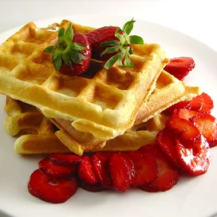
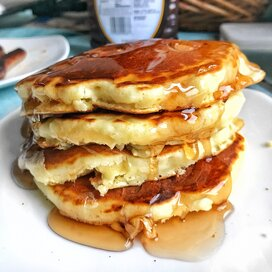
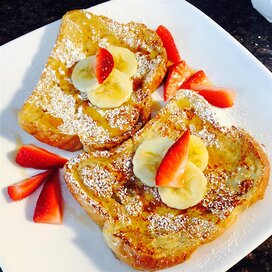

Create a delicious everyday breakfast or pull together an amazing brunch with top-rated recipes for pancakes and waffles, bacon and eggs, brunch casseroles, coffee cakes, muffins, quiche, and so much more.
A lovely, crispy waffle perfect for the morning.
This is a great recipe that I found in my Grandma's recipe book. Judging from the weathered look of this recipe card, this was a family favorite.
This French toast recipe is different because it uses flour. I have given it to some friends and they've all liked it better than the French toast they usually make!
